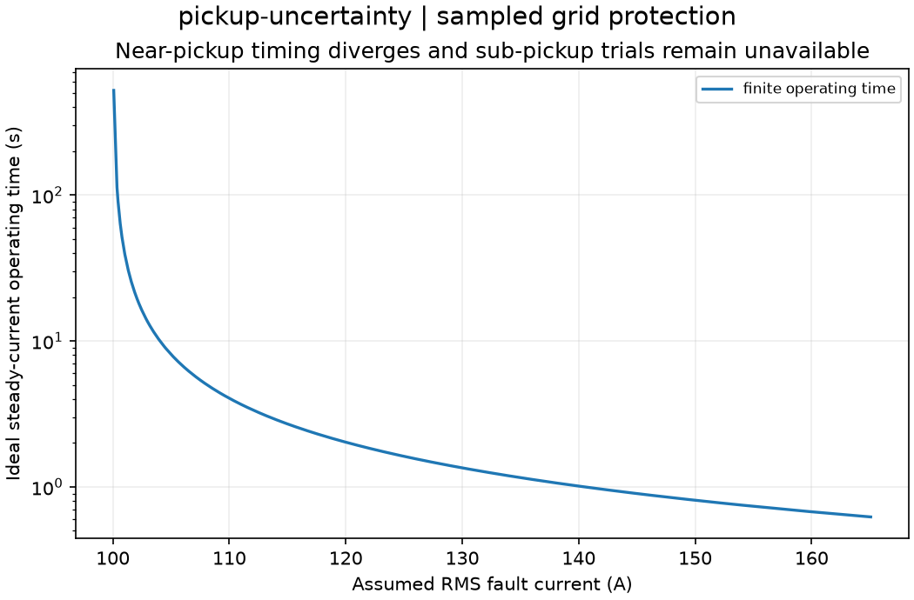

Reproducible sampled grid protection. Units and field components are printed on the scientific axes. RMS phasors use exp(+i omega t); terminal currents point into the protected line.
Sealed numeric archive | Summary CSV | Physical parameters | Run request | Source and environment

| conditional_mean_ci_high_s | 10.698178332487402 |
|---|---|
| conditional_mean_ci_low_s | 4.305429701067421 |
| conditional_mean_delay_s | 6.838107693768837 |
| missed_trials | 59 |
| sensitivity | 0.8525 |
| wilson_high | 0.8838939266416067 |
| wilson_low | 0.8143999058527144 |
These are simulations, not hardware measurements. Network-model, measurement, timing and statistical uncertainty require distinct convergence checks. Singular or unilluminated data use explicit masks.
Source revision: b6841e1232dcac6db840a727ea4b1e98340b98a7.
Dirty checkout: False.
Configuration SHA-256: adeed338026f124be175526617e20f0bc6cd5198c5e4d80403672dbcb5ae8956.
Replay preserves original source and parameter provenance. SHA-256 manifests detect changed bytes; they are unsigned integrity records, not certificates of physical validity.